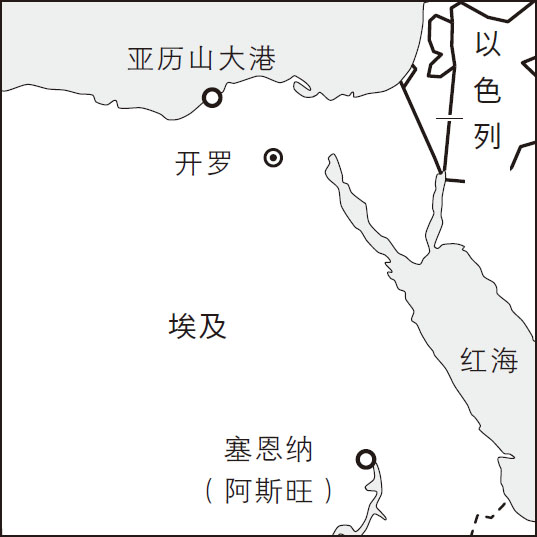
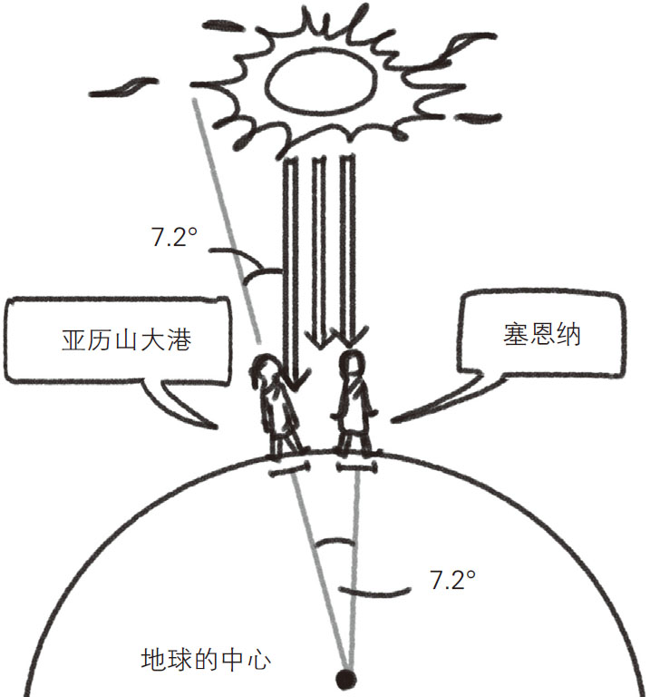

拥有强烈好奇心的成年人往往会招来旁人的白眼，公元前3世纪左右的古希腊学者埃拉托色尼 就是其中之一，他身边的学者们给他取了个外号——“贝塔”。贝塔（β）是希腊文字中的第二个字母，相当于英文字母中的B。这些学者认为他与柏拉图等一流学者比起来，顶多算是二流学者，因为他总是偏离当时的主流研究方向，对什么都表现出兴趣并且还投身其中。

埃拉托色尼会不时地说出一些奇怪的话，比如“我要来测算一下地球的周长”。当时的古希腊科学研究已经非常先进了，很多人都知道地球是一个球体。但是没有一个人想过要计算地球的周长。
埃拉托色尼曾考虑过：是否可以利用太阳的影子来计算地球周长 ？他将埃及第二大城市亚历山大港设为计算参照，而他的老家则在塞恩纳（今阿斯旺），两地的相对位置如图2-11所示。位于亚历山大港以南的塞恩纳有一口深井，埃拉托色尼发现，夏至那天的阳光可以直射井底，这表明太阳在夏至那天正好位于井的正上方。

图2-11 亚历山大港与塞恩纳（阿斯旺）的相对位置
但是，亚历山大港地面的立竿在夏至这天却有一段很短的影子。埃拉托色尼认为，立竿的影子是亚历山大港的阳光与立竿的夹角造成的，他分别测量了立竿和影子的长度，由此得出这个夹角约为7.2°。也就是说，同日同时，太阳位于塞恩纳的正上方，而对于亚历山大港，太阳则位于正上方偏7.2°角的位置。
这个7.2°的夹角究竟意味着什么？我们据此绘制了一张简图，如图2-12所示。从地心来看，亚历山大港与塞恩纳的位置偏离了7.2°，而7.2°相当于圆周角360°的五十分之一。于是，埃拉托色尼认为，地球周长应该是亚历山大港与塞恩纳之间的距离的50倍。

图2-12 亚历山大港、塞恩纳与太阳的位置关系
当时公认的是，骆驼需要走50天才能从亚历山大港到达塞恩纳。如果按照骆驼一天能走100斯塔迪亚（古希腊长度单位，1斯塔迪亚约合185米）来计算，亚历山大港到塞恩纳的距离大约为5000斯塔迪亚（约925千米）。如果地球周长是这个距离的50倍，大约就是4.6万千米，即：
5000斯塔迪亚×50＝250000斯塔迪亚（约为4.6万千米）
今天，通过对航迹的计算，我们知道地球的赤道周长约为40076千米。与这个数值相比，埃拉托色尼的计算结果显然存在一定的误差。但是，他的计算结果是以塞恩纳位于亚历山大港的正南方为前提的，而实际上塞恩纳位于亚历山大港正南偏东的方向上。另外，对于亚历山大港和塞恩纳之间的距离，他是以骆驼的步行速度（50天到达）为参考推算出来的。在这种情况下，能得出如此接近的结果已经非常令人赞叹了。
除此之外，埃拉托色尼在其他方面也有着家喻户晓的成就。他计算了太阳到地球的距离，还发明了用于求一定范围内的质数的“埃拉托色尼筛选法”。而那些曾经称埃拉托色尼为“贝塔”的学者们都没有在历史上留下名字。不拘泥于常识、为自己的兴趣孜孜不倦探索的埃拉托色尼，才是真正值得我们敬佩的学者。